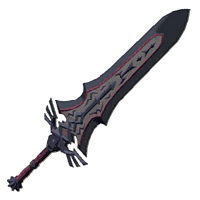
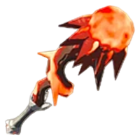
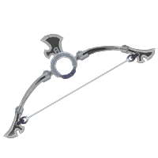
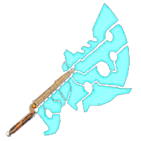
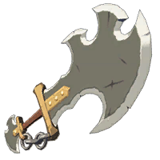
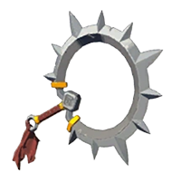

|
Leagond of Zelda: Breath of the wild |
| Artifact |
Description |
Location |
Attack Power |
Duribility |
|  |
Royal Guard's Claymore |
A weapon forged out of ancient technology, designed to oppose the Calamity.
It is strong but its low durability makes it impractical in battle.
|
Hyrule Castle |
72 |
15 |
|  |
Meteor Rod |
A magical artifact, made by an ancient magician, that casts three fireballs
at once. It breaks upon running out of magic. |
Crenel Hills, Hebra Mounains |
10 |
32 |
|  |
Savage Lynel Bow |
This bow has great stopping power and can pierce thick armor very easily. |
Dropped by White-Maned, Silver and Golden Lynels |
32 |
45 |
|  |
Ancient Battle Axe++ |
This weapon is very powerful. Its base attack power is 60 but can increase even more with some Weapon Bonuses. |
Dropped by Guardian Scout 4 |
60 |
25 |
|  |
Savage Lynel Sword |
This is the strongest one-handed weapon in the fame. This weapon can easily destroy any foe. |
Dropped by White-Maned Lynels, Silver and Golden Lynels |
58 |
41 |
|  |
Demon Carver |
The Demon Carver is a strong, one-handed weapon. This weapon is unique because of its shape and appearance.
It is a meatal weapon, with a circular shape and spikes. |
Dropped by Yiga Footsoldiers |
40 |
25 |